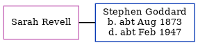

Phyllis Maud Goddard 1915 - 1999
[ Home ] | [ Calendar ] | [ Surnames Index ] | [ Census Index ] | [ Family History ]An incapacitated and the younger of 2 children of Frederick Goddard (a bricklayer) and Emily Staples, Phyllis Goddard, the third cousin once-removed on the father's side of Nigel Horne, was born in Elham, Kent, England on Sep 16, 19151,2,3. On Sep 29, 1939, she was living at 32 Kings Road, Folkestone, Kent, England1.
She died on Mar 27, 1999 in Folkestone3.
Parents
- Frederick Thomas was born on Dec 17, 1865
- Emily was born on Mar 6, 1872
Citations
- 1939 Register - Findmypast (was recorded at this address)
- England & Wales births 1837-2006 - Findmypast
- England & Wales deaths 1837-2007 - Findmypast
Media
England & Wales births 1837-2006 - BMD/B/1915/4/AZ/000495/066
1939 Register - TNA/R39/1724/1724I/007/43
England & Wales deaths 1837-2007 - BMD/D/1999/3/83098866
Family Tree
Generated by ged2site. Last updated on Jun 11, 2024